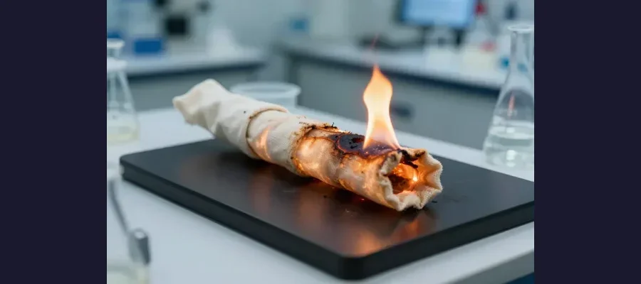
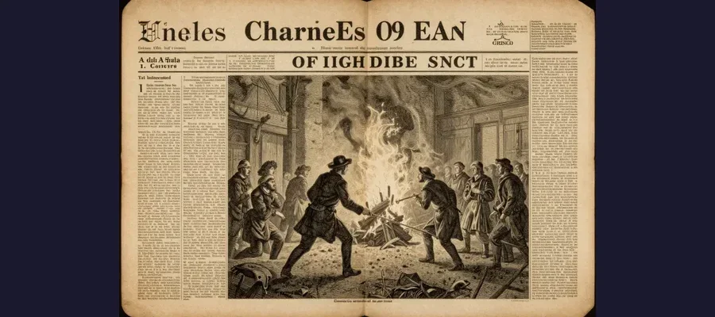

Spontaneous Human Combustion: Can People Really Self-Ignite?

For centuries, people have reported cases of humans bursting into flames with no apparent source of ignition — leaving nearby objects strangely untouched.
Imagine this scene: a person is found reduced to ashes in their home, but the chair they were sitting in is barely scorched, and the surrounding room is largely intact. No matches, no candles, no electrical faults. The fire seems to have come from inside the body itself.
This is the chilling phenomenon known as spontaneous human combustion (SHC). For over 300 years, people have reported cases where humans appear to have caught fire without any external ignition source. Science has been trying to explain it ever since.
Overview
A History of Strange Fires
The earliest recorded case of alleged SHC dates back to 1470, when an Italian knight named Polonus Vorstius was said to have burst into flames after drinking too much wine. Since then, over 200 alleged cases have been documented worldwide.
Most reported cases share several common features:
- 🔥 The victim’s body is almost completely destroyed by fire
- 🏠 But the surrounding area is largely untouched
- 👃 A strange, sweet, greasy odor is often reported
- 🦵 Extremities (hands, feet) sometimes survive the fire
- 🍺 Many victims were elderly, alone, and near an open flame

The “wick effect” experiment shows how a body can burn slowly for hours using body fat as fuel, mimicking a candle’s burning process.
📚 Charles Dickens Believed in It
The famous author Charles Dickens included a spontaneous combustion death in his novel Bleak House (1853). When critics called it unrealistic, Dickens defended himself by citing documented real-life cases. The controversy raged for decades.
Famous Cases
🕯️ Mary Reeser (1951): Perhaps the most famous modern case. A 67-year-old woman from St. Petersburg, Florida, was found almost completely reduced to ashes. Only her left foot remained. Her room showed extreme heat damage in a small area but the rest was relatively intact.
🇮🇪 Dr. John Bentley (1966): A 92-year-old physician was found dead in his bathroom. A hole was burned through the floor beneath him, but newspapers nearby were undamaged. The FBI investigated but found no evidence of foul play.
🇫🇷 Nicole Millet (1725): An innkeeper’s wife was found burned to death in a chair. Her husband was convicted of murder, but a young man named Claude Nicole (no relation) campaigned to clear him, arguing it was spontaneous combustion.
Evidence
The Science Behind the Flames
Modern science has proposed several explanations for alleged SHC cases:
🕯️ The Wick Effect: This is the leading scientific explanation. When a person’s clothing catches fire (from a dropped cigarette, for instance), body fat can act as fuel and clothing as a wick. The body burns slowly and intensely for many hours — like a candle. This explains why the body is destroyed while nearby objects remain intact.

Victorian-era newspapers reported on SHC cases with a mixture of scientific curiosity and sensationalism.
⚡ Chemical factors: Some researchers have suggested that certain combinations of diet, medication, or medical conditions could make the body more flammable. However, no credible evidence supports the idea that a human body can spontaneously ignite without an external source.
🔬 Ketosis: Extreme ketosis (a metabolic state where the body burns fat for energy) could theoretically produce flammable acetone. Some SHC advocates suggest this could explain internal ignition, but the concentrations needed would be far beyond survivable levels.
Competing Explanations
Science vs. Mystery
🔬 The skeptical view: Most forensic scientists believe all SHC cases have conventional explanations — usually an unnoticed ignition source (dropped cigarette, ember from fireplace) combined with the wick effect. The “mystery” arises because the initial flame source is consumed in the fire.
❓ The unexplained cases: However, a small number of cases have genuinely puzzled investigators. In some instances, no ignition source was found, witnesses reported seeing no fire beforehand, and the pattern of burning seemed inconsistent with known combustion patterns.
🏛️ The FBI's Take
When the FBI investigated the Mary Reeser case in 1951, they concluded that the most likely cause was her dropped cigarette igniting her nightgown, leading to the wick effect. But they acknowledged they could not be 100% certain.
Open Questions
Can Humans Really Self-Ignite?
The scientific consensus is clear: there is no proven mechanism by which a human body can spontaneously ignite without an external heat source. The internal temperature required (over 300°C) would be fatal long before combustion could occur.
Yet the mystery persists because some cases genuinely challenge easy explanation. The wick effect accounts for many incidents, but not all. Whether there are other, unknown factors at play remains one of forensic science’s most intriguing open questions.
Spontaneous human combustion may not be truly spontaneous — but it remains a powerful reminder that sometimes science hasn’t yet found all the answers.
References & Further Reading
- Wikipedia: Spontaneous Human Combustion overview
- NCBI: Forensic analysis of alleged SHC cases (academic papers)
- Britannica: Spontaneous Human Combustion
- Scientific American: The science behind the wick effect
Editorial note: the existence of true spontaneous human combustion is disputed in the scientific community. See our Editorial Policy.